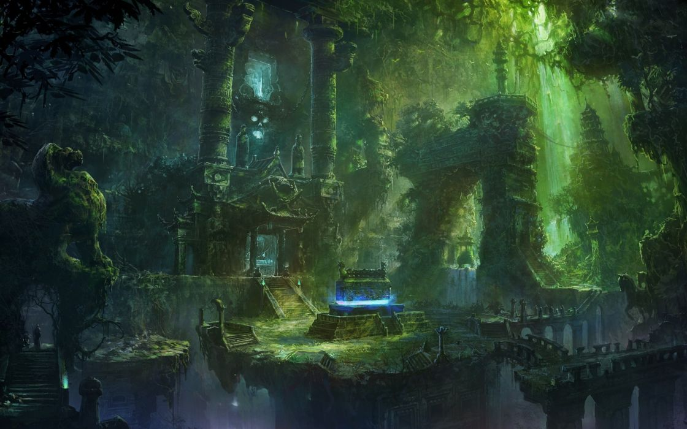

Interactive Treasure Game
"You have chosen wisely. This path leads to timeless youth and beauty".
The rusted, corroded doors of that chamber are rinsed clean by a sheet of purifying water pouring from the relief above, revealing their pristine, metallic nature as they swing open. In the Hall of Promise, where the painted murals on the walls show the timeless beauty of Mara's chosen ones as everyone around them ages, the walls reflecting with the light on the water. At the far end of the hall, a massive stone face of Mara, with flowering vines scaling the walls around it. The room appears illuminated with shimmering aqua blue light. Front-lit scrims along the walls are painted to show other true believers drinking mystic water, discarding their withered skin and emerging young and beautiful.
